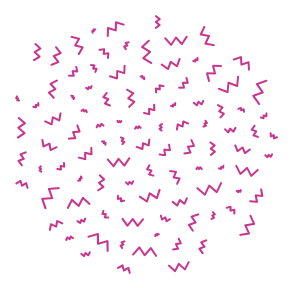
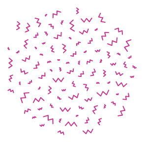
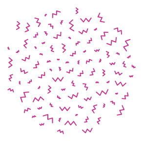
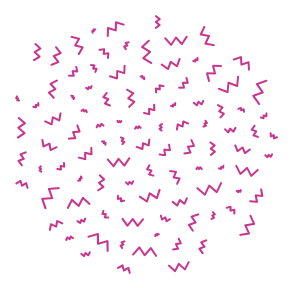

¡Hola! Soy Laura Camila Gómez, diseñadora gráfica con 5 años de experiencia realizando piezas gráficas estáticas y animadas para redes sociales, mailings, edición de videos, entre otros. Actualmente busco desarrollarme como diseñadora front-end, he realizado cursos de desarrollo web, JavaScript, UX/UI y actualmente me encuentro cursando React JS.